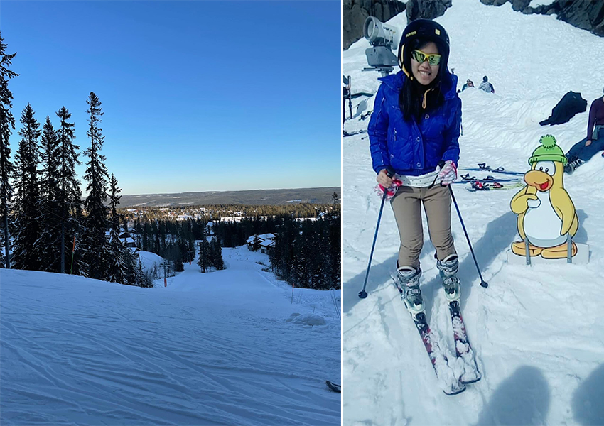

我還記得初次那個令人難忘的滑雪經驗，那是一個充滿刺激和歡笑的冬日。在首爾寒冷的早晨，我興奮地穿上了滑雪裝備，仔細聆聽導遊的翻譯，從最基本的穿脫滑雪鞋子到技巧上的學習，準備踏上雙板滑雪的冒險之旅。
首先，穿著舒適的襪子，將腳放入滑雪鞋（Boots）內，確保腳跟貼緊鞋子內側，接著拉起滑雪鞋的扣帶，並且腳踏平站立，確保腳跟和腳趾都有舒適的空間，不宜太緊與太鬆。建立基本站立姿勢，將Boot放入結合器（Binding），且膝蓋微微彎曲，上半身稍微向前傾斜，保持平衡。再來練習煞車技巧，採八字形煞車，將雪板的前端朝內靠攏，尾巴分開，減慢速度。慢慢練習控制楔形煞車的程度，避免過於急速停止而跌倒。另外，對於初學者而言，跌倒是無可避免，故安全的跌法相當重要，應降低重心以大腿外側，腰下臀側著地，之後同時用雙杖，用力將身體站直。最後，學習轉彎技巧，一開始可以使用基本平行轉彎，將雙腳稍微分開，輕輕轉動腳踝，讓雪板轉向所需的方向，隨著技巧提升，可以嘗試身體轉向轉彎，轉動上半身，引導雪板轉向。
一開始，我感到有些緊張，因為這是我第一次嘗試滑雪需要一些時間來掌握基本技巧。但是，當我踏上初學者坡道，我的緊張很快被無比的興奮所取代。我跟隨著教練的指導，學習如何控制雪板，保持平衡，以及如何適應這全新的運動。隨著時間的推移，第二次的滑雪一樣在韓國的雪場，我的技巧逐漸進步，我開始挑戰更難的坡道，並嘗試一些較困難的轉彎技巧。雖然有時候我會摔倒在雪地裡，但每一次的失敗都讓我更有動力去嘗試，去改進，每一次成功的轉彎和滑行，都讓我感到無比的成就感。
第三次的滑雪是在紐西蘭的滑雪場，已經有經驗的我，迫不及待想開始滑雪，直接選了難度較高的坡道，那一次次的滑雪除了讓我的技巧的提升，滑雪還讓我與大自然更緊密地接觸。站在山頂，眺望著遠處的雪景，我感覺自己彷彿融入了這片純白的世界中。每一次下坡的時候，風吹過臉龐，雪花在我身邊飛舞，那種自由和快感讓我彷彿忘記了一切煩惱。而在這個過程中，我也結交了許多志同道合的朋友。我們一起分享著滑雪的喜悅，互相鼓勵著進步。在滑雪場上，我們共同創造了許多美好的回憶，每一次的滑雪之旅都成為了我們友情的寶貴見證。
|  |
第四次是在瑞典的雪場，由於疫情的關係，四年半才又一次回到這熟悉又陌生的雪場，總的來說，這次滑雪經驗對我來說是一個難忘的冒險。由於它是我經歷過最大型的滑雪場，並且連續滑了四天，讓我有機會嘗試更多不同具有挑戰性的滑坡與彎道。從第一天兼具害怕與挑戰，到最後一天的依依不捨，都會讓我繼續保持對滑雪的熱愛，並且期待著下一次的滑雪之旅。
 |